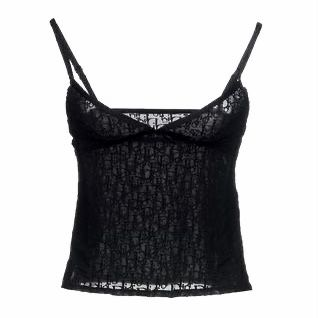
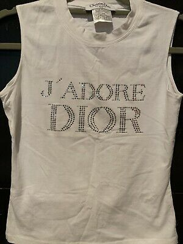

CHANEL TOPS
This is a beautiful and classic dior blouse from the fall collection of the year 2000. It can be paired with a white mini skirt or white flared jeans for a more casual look. It is perfect for a casual brunch with your friends. This top exudes the energy of a summer spent in italy and overall is a summer top.

This is the Christian Dior sheer black tank top. This is a little bit more edgy and can be worn with leather in order to accentuate the edginess. For example, wearing a loose fitting leather jacket with a cutout similar to that of a blazer will elevate this top. Additionally, it can be worn on top of another top for a summery yet more modest look.

This top is from the 1947 dior collection. It is super rare to find and is quite a beautiful piece. One can dress this shirt down by pairing it with sneakers and flared jeans for an 80's inspired look or can dress it up with a midi skirt and platform, open-toed heels.
Dior Website